1、待收件列表显示的订单为指派给自己的订单，状态为等待上门收件。
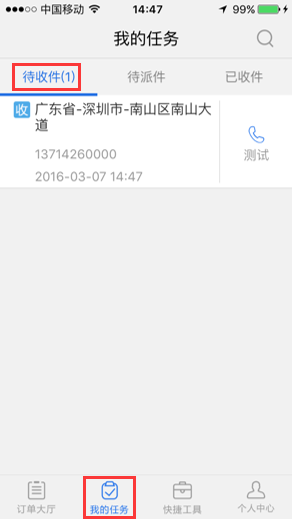2、点击"电话"按钮，可以打电话给寄件人。
3、点击“订单”进入订单详情。在订单详情界面，完善带*号必填信息后选择支付方式进行支付结算，完成收件；如果输入的运单号长度为6——8位数时，提交则会提示单号长度不正确，确定可正常保存成功；选择否则可以继续修改信息。
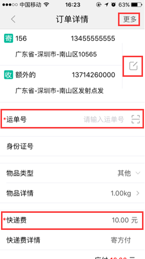4、点击右上角"更多"按钮，可以选择将订单退回指派或者拒收该件。
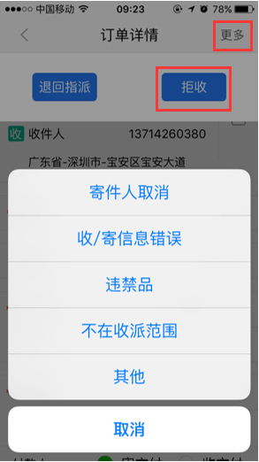1、已经完成收件的订单可在此列表查询。
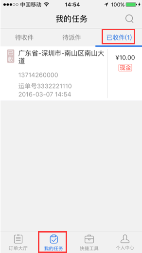2、点击订单可进入运单详情界面
3、点击右上角更多可选择自揽自派或者修改订单，选择自揽自派则订单进入待派件列表，选择修改订单可修改订单详细信息，可对收寄地址详情、物品详情、快递金额进行修改。（如订单已选择寄付且支付方式为非现金支付则不能修改金额）
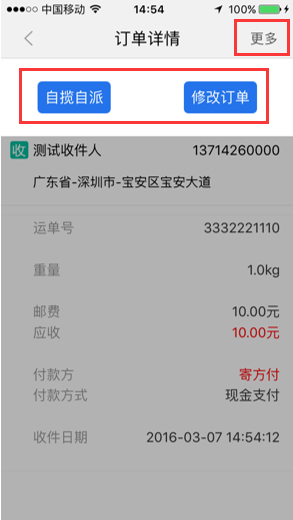1、待派件列表显示的订单为指派给自己的派件订单信息。
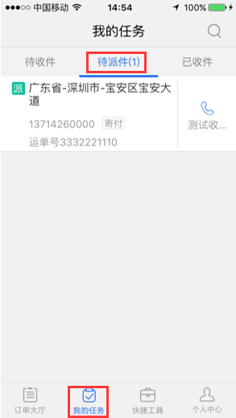2、点击"电话"按钮，可以打电话给收件人。
3、点击"订单"进入订单详情页面。
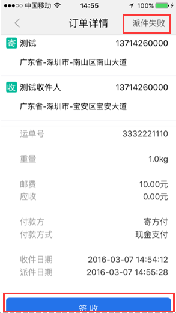4、在订单详情界面，确认应收代收货款和应收邮费信息（无代收款、寄付订单则不用），选择支付方式，进行支付结算，完成派件
5、当派件失败时，点击右上角“派件失败”按钮，选择派件失败原因进行确认拒签
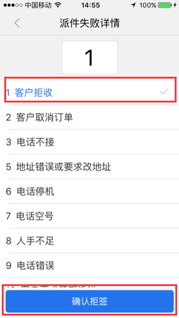上门直接收件时，可快捷进行登记收寄方、财务等信息进行收件。（*为收件时必需填写的项目）点击完善地址，可以修改收寄方的详细信息。
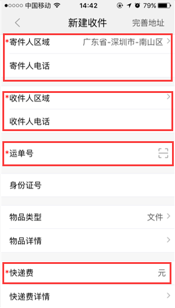1、将运单条码放在扫描指定区域，扫描运单号后，可以直接跳转到该订单的代收件界面，完善信息后即可完成收件；点击右上角的输入按钮可以手工填写订单号进行收件
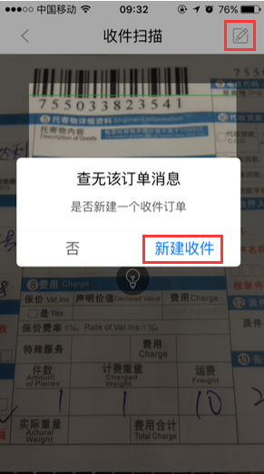2、当扫描的运单号没有收件订单记录时，则会提示新建收件，确认后跳转到新建收件界面，填写完整信息后可提交完成收件；点击右上角的完善地址，可以填写详细的收寄件地址
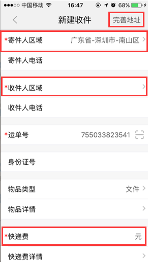1、快递员已从网点揽过快件，通过扫描定位订单进行派件和签收
2、如果扫描的单号没有派件记录，则扫描后揽件成功进入自己待派件列表；如果扫描的单号已经有别人在派件，则会提示是否派发，选择是则将该件指派到自己并进入待派件详情界面；如果扫描的单号在系统不存在，则扫描后会提示查不到单号。
3、点击右上角输入按钮可手动输入运单号。
输入或扫描运单号，拍下收/派件面单，点击"完成"进行面单上传。
1、会员的新增和会员充值操作，输入会员号和充值金额等信息，进行会员新增和充值。
2、新增输入的会员号已存在时，会跳转到会员充值界面。
3、会员充值界面点击右上角充值记录按钮，可以查看充值记录。
扫描或者输入需要标为滞留件的单号，点击标为滞留，选择滞留（派件失败）原因保存即可；如果扫描或者输入的运单号不存在则会提示输入正确的运单号。
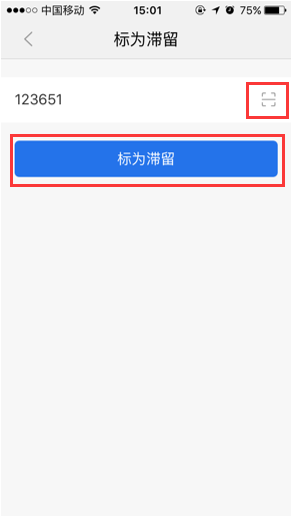进入界面可以进行签到/签退操作；点击查询可以根据月份、周、天进行查看签到记录
进入收入明细界面，默认显示本月点击订单可以查看订单详情，可以点击“查询”，查询更多收入情况。
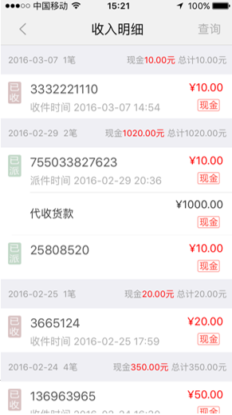进入收派历史界面，默认显示20条记录，每次点击加载更多读取20条记录，可以根据筛选条件：日期和收派类型查询订单情况
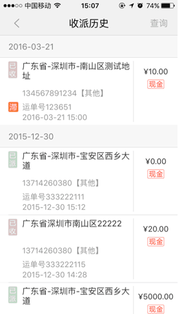点击“消息通知”，进入消息通知界面，“消息通知”页面显示“订单消息”和“其他消息”，点击信息，可查看消息内容
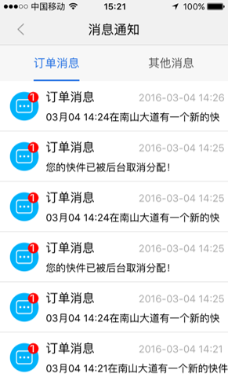
1、网点查询。进入界面显示所有分站名字及电话，点击电话可直接拨打。
2、未交清单。可以查询还在自己身上的件。
3、违禁品查询。可以查询国家法律规定不允许收寄的违禁物品清单。
4、收派范围。可以查询可以进行收派的区域和不进行收派的区域。
5、快递服务协议。查看快递收寄服务的说明。